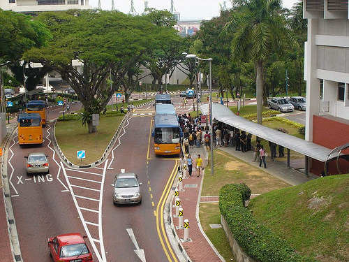

Autonomy for Mobility on Demand (MoD) Systems
As the use of private vehicles starts approaching its limits to effectively meet the demand for personal mobility in densely populated cities, mobility-on-demand systems emerge as a more economical and sustainable alternative. One of the main challenges in managing mobility-on-demand systems is in keeping a balanced distribution of the vehicles among different stations to ensure minimal waiting time for the customers at sustainable cost. We explore the use of vehicle autonomy in addressing this problem.
| An overview video of our autonomous mobility on demand platform operating in the NUS campus with narration. |
Our research deals with developing an autonomous testbed able to navigate in a crowded campus environment in the presence of other vehicles and numerous pedestrians on the road. We investigate algorithms to push the boundaries of autonomy with a minimalistic sensor configuration to achieve full autonomy required for a mobility on demand system.
The system developed also acts as a test bed for testing various technologies developed at Future Urban Mobility center for improving personal mobility in an urban setting. As an example a novel communication protocol for autonomous driving CarSpeak was tested on our vehicle.
|  |
| The picture shows a typical environment of a campus scene (NUS) where an autonomous vehicle has to navigate in the presence of various kinds of vehicles, and numerous pedestrians on the road. |
We develop, utilize and fully support open source packages and our system runs extensively on ROS. Our system has run over 100km till date in the campus environments during the course of various demonstrations in the NUS campus for various visitors and dignitaries.
Relevant Publications
- Z. J. Chong, B. Qin, T. Bandyopadhyay, T. Wongpiromsarn, B. Rebsamen, P. Dai, S. Kim, M. H. Ang Jr., D. Hsu, D. Rus, and E. Frazzoli, Autonomy for Mobility on Demand to appear in IEEE/RSJ International Conference on Intelligent Robots and Systems (IROS'12), Video Session, 2012.
- Z. J. Chong, B. Qin, T. Bandyopadhyay, T. Wongpiromsarn, E. S. Rankin, M. H. Ang Jr., E. Frazzoli. D. Rus, D.Hsu and K. H. Low, Autonomous Personal Vehicle for the First- and Last-Mile Transportation Services. IEEE International Conference on Robotics, Automation and Mechatronics, RAM-2011.